Вітальня · журнал «ДентАрт» 2023 №3
Сергій Остафійчук: «Пишаюся тим, що у нас такі Люди і така Країна, і все у нас буде добре!»
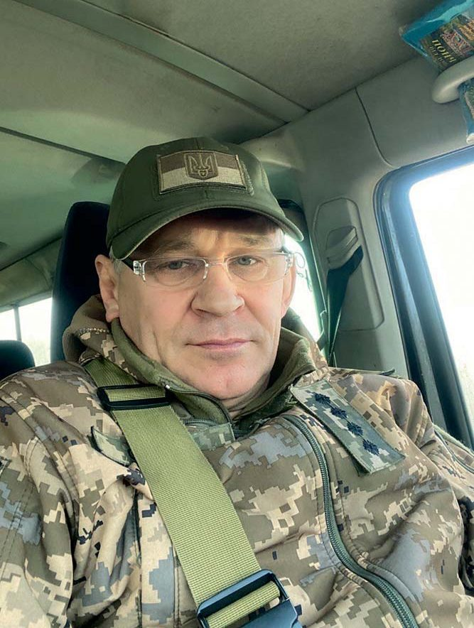
Гість «Вітальні» «ДентАрту» — Сергій Петрович Остафійчук, засновник, власник, директор і лікар-стоматолог багатопрофільної клініки «Авіценна» (м. Хмельницький), що діє з 1994 року. 24 лютого 2022-го талановитий лікар із 30-річним стажем добровольцем пішов на фронт; 27 лютого те саме зробив його син Дмитро. Бойовий шлях капітана медичної служби, лікаря медпункту 86-го батальйону 106-ї бригади, — це гарячі точки Харківщини, Донеччини, Херсонщини. Наша розмова — і про погляд стоматолога на розвиток фаху, і про його шлях воїна, захисника України.
Лікарка нагадувала ангела з небес…
— Слава Україні! Шановний Сергію Петровичу, стоматологічна спільнота і багато пацієнтів знають Вас як висококваліфікованого фахівця, власника клініки «Авіценна», а віднедавна знаємо Вас ще й як захисника України, який на фронті відстоював святі для українців цінності – Волю, Незалежність, світову безпеку і рятував життя бойових побратимів. Тож читачам журналу «ДентАрт» буде цікаво дізнатися і про Ваш професійний, і про бойовий шлях. Почнемо з першого, і передусім – з вибору професії. Гості нашої Вітальні зазвичай розповідають про різні причини обрання фаху стоматолога: у когось – щасливий випадок, у іншого – родинна традиція, а в ще в когось – бажання наслідувати приклад гарного лікаря, який трапився на життєвому шляху в юні роки… А як було у Вас?
— Героям слава! Мене обрати фах стоматолога спонукала причина, яку Ви назвали третьою. Одного разу в місті Коломиї на подвір’я школи-інтернату, де я навчався, заїхав зелений вагончик з червоним хрестом. З’ясувалося, це був стоматологічний кабінет пересувного типу. Коли я туди зайшов уперше, то побачив лікарку Наталю Миколаївну, вона мені нагадувала ангела з небес, від неї пахло йодоформом і чистотою, на ній був накрохмалений халат, дуже гарні панчохи, черевички на підборах. Вона була така гарна, що я до неї ходив лікувати зуби, які тільки міг, доки вона не сказала, що приходити вже не треба. Тоді я у неї запитав, що треба зробити, щоб стати таким лікарем, як вона, і бути такою людиною. Вона відповіла, що потрібно для цього небагато: гарно вчитися і вступити в медичний інститут. І я вирішив, що так і зроблю. Це було таке рішення ще підліткове, але я став старанно вчитися, а в 1986 році, після служби в армії, вступив на стоматологічний факультет Івано-Франківського медінституту. Закінчив навчання у 1991 році – році відновлення Незалежності України і за розподілом потрапив у Хмельницький…
Надихало те, що це твоя практика, твоя творчість…
— Наскільки підготовленим до лікувальної практики Ви приїхали у Хмельницький і де працювали спочатку? І що спонукало Вас започаткувати власну справу?
— Підготовленим я був досить ретельно, тому що навчався добре, був навіть членом Ученої ради інституту від студентства. Але якщо Ви гадаєте, що спочатку я попрацював у державній клініці, то це не так. Спонукали мене відразу ж розпочати власну справу… проблеми і біда. Коли приїхав за направленням у місто Хмельницький, пройшов інтернатуру і звернувся в облздороввідділ, роботу мені ту, яку обіцяли, не дали, пропонували їхати в Стару Синяву, бо тільки там було місце лікаря-стоматолога. Я вирішив поїхати у міністерство і попросити нове направлення. Це був 1992 рік. У міністерстві мене скерували в ліцензійне відділення. Тоді якраз починала розвиватися ринкова економіка, цей процес охоплював і стоматологію, виникали приватні клініки, проєкти різні…
У ліцензійному відділенні мене уважно вислухали і запропонували ліцензію на відкриття власної справи. Я цим скористався, подав усі документи, і дуже швидко (навіть швидше, ніж це робиться нині) отримав ліцензію на стоматологічну діяльність.
А далі потрібно було робити все можливе, щоб відкрити стоматологічний кабінет – заробити грошей, знайти приміщення, яке б відповідало всім вимогам. Довелося продати все, що в мене було. Ясна річ, набив ґулі у перші роки, але далі вже все пішло досить успішно…
— Які етапи розвитку пройшла Ваша багатопрофільна клініка «Авіценна» і що було найскладнішим у становленні Вашого стоматологічного бізнесу?
— Найскладнішим був перший етап, коли вирішувалася проблема, на чому працювати і де. Склавши перелік обладнання, приладів, усього, що потрібне, щоб лікувати пацієнтів на належному рівні, я з рік потратив на те, щоб усе це закупити і зібрати в одне місце. Потім звернувся у міськраду, і вислухавши мене, мені надали в оренду підвальне приміщення площею 70 квадратних метрів. На той час це цілком влаштовувало, ми з дружиною Інною його відремонтували за власні кошти і відкрили практику на одне крісло. Обладнання, матеріали були вітчизняні, доступу до світового ринку тоді ще не було, тому перші кроки були не такі впевнені, але надихало те, що це твоя практика, твоя творчість, ніхто тобі не вказує, як треба працювати. Працюй так, як умієш, тільки щоб пацієнти були задоволені, бо їхні проблеми вирішені.
І ми в цей струмінь потрапили, і так 1994 року розпочалася діяльність клініки «Авіценна». Синові Дмитрикові тоді було два рочки, з ним сиділа няня, а ми з Інною працювали.
Курсів на тему управління стоматологічним бізнесом тоді ще не влаштовували, довелося робити перші кроки дуже так довільно, але потихеньку-потрошку, крок за кроком ми все-таки досягали успіху, до нас були великі черги, люди хотіли чогось нового, прагнули якісного лікування, тож клініка розвивалася.
Пацієнти теж змушують нас рухатися вперед
— Щоб надавати пацієнтам стоматологічну допомогу на сучасному рівні, потрібно володіти інноваційними технологіями. Як оволодіває ними персонал Вашої клініки?
— По-перше, персонал ми підбираємо з відповідним рівнем базових знань. По-друге, постійно відвідуємо конференції, курси, з’їзди, вебінари – різні види навчання – для того, щоб поповнювати, оновлювати базу і технології. В епоху цифрових технологій це треба робити хоча б раз на три місяці.
Ще немаловажний фактор – пацієнти, які до нас приходять, також нас навчають. Вони вимагають вищу якість реставрацій, лікування, хочуть щось нове, що поліпшує усмішку і здоров’я. Відтак і пацієнти теж змушують нас рухатися вперед.
Ясна річ, ми в колективі і один у одного вчимося. Ми вчимося у життя. Тому з оволодінням інноваційними технологіями у нашій клініці проблем немає. Звичайно, що цього забагато не буває, але сьогодні ми виконуємо всі ті завдання, які ставлять перед нами ринок і потреби пацієнтів.
— Як працює колектив «Авіценни» під час війни? Чи є проблеми з постачанням матеріалів і обладнання, з кадрами?
— Звичайно, що в умовах війни у нас ті самі проблеми, які є в кожного українця у тилу. Це світло, опалення, електрика, логістика, комунікації, транспорт, бомбосховища… Навіть психічний стан людей важливий. З усім цим треба рахуватися. Ми робимо все, що можемо, щоб пом’якшити вплив усіх цих факторів і залишатися людьми, надавати допомогу в тому обсязі і в тій якості, які потрібні.
Культурі ставлення до свого стоматологічного здоров’я треба навчати змалку
— Ви працюєте з великою кількістю пацієнтів. Чи бачите прогрес у ставленні наших співвітчизників до збереження здоров’я ротової порожнини, чи ще слід багато зробити для просвіти пацієнтів, починаючи зі шкільних років?
— Звичайно, прогрес є. Багато пацієнтів регулярно приходять до стоматологів на професійну гігієну, а не тільки тоді, коли з’являються серйозні проблеми. Змінилися і їхні уявлення про красу усмішки. Коли ми починали свою практику, то композитні пломби – це було щось нове на той час, переважно ставили цементні. Коронки були, як їх називали, булатні, з нержавійки, покриті нітрид-титаном, жовті зуби, золоті коронки і т. п. Зараз усе це в минулому. Уже й металопластмасу ніхто не робить, і металокераміка морально застаріла. Композитні реставрації, кераміка, цирконій, вініри, мінімально інвазивний підхід – це технології, про які знають і пацієнти.
Однак слід ще багато зробити для їхньої просвіти, бо профілактика – найважливіше. І культурі ставлення до свого стоматологічного здоров’я справді треба навчати змалку, починаючи з дитсадків і шкіл. Але позитивне те, що ринок стоматологічних послуг і сам регулює ці процеси. І люди розуміють, що коли вчасно не звернутися до стоматолога, то наслідки будуть погані, а запізніле лікування буде дорожчим. Я вважаю, що в майбутньому ситуація зі ставленням пацієнтів до свого стоматологічного здоров’я буде значно кращою. Лікарі-стоматологи в основному будуть займатися профілактикою та лікуванням вад і порушень розвитку зубощелепної системи, корекцією її росту.
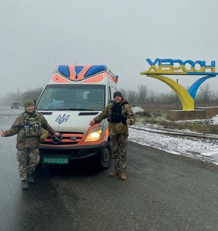
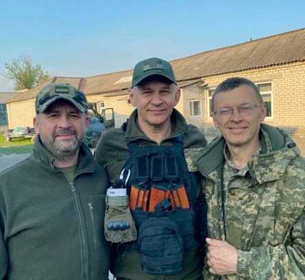
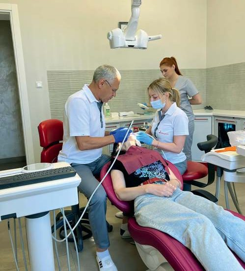
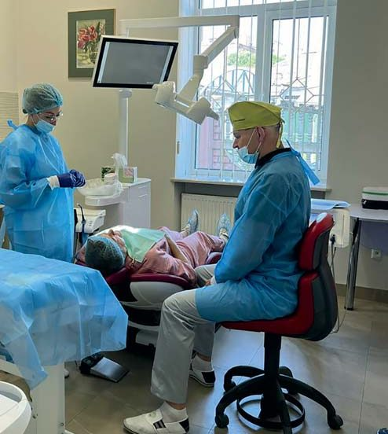
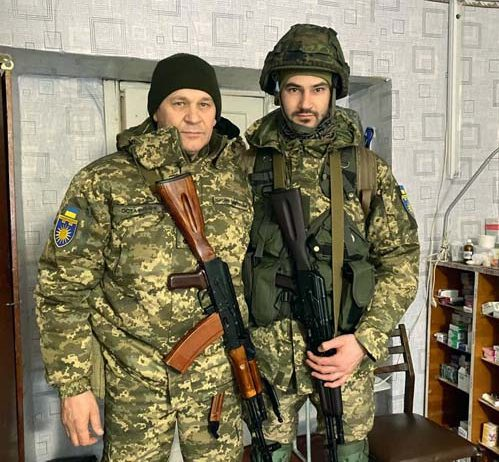
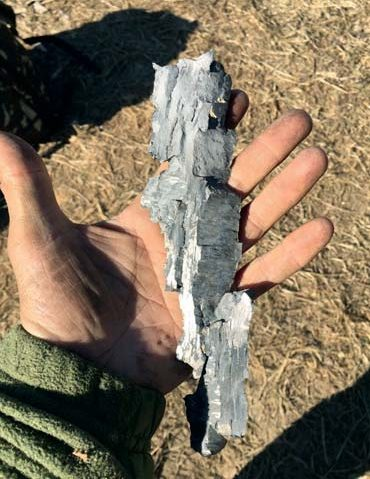
Відновлення прийому пацієнтів у своїй клініці після демобілізації із лав ЗСУ. Осколки, які несуть смерть і каліцтво. Радісні хвилини, коли бачиш рідну людину… Сергій Остафійчук із сином Дмитром. Яма після прильоту авіабомби в школу села Хрестище на Донеччині, глибина 8 метрів.
Був і водієм, і лікарем, і санітаром одночасно…
— А тепер про Остафійчуків-воїнів… Розкажіть про свій бойовий шлях і Вашого сина.
— Коли 24 лютого 2022 року розпочалася повномасштабна війна, я прийшов у військкомат міста Хмельницького. Здивувало те, що довелося стояти в черзі години зо дві. Чоловік 200 стояли і записувалися в ряди добровольців. Потім сказали, що офіцерам без черги. Поскільки я капітан запасу ЗСУ, то пішов на третій поверх, отримав повістку без черги, і мене направили в Гречани, це такий район міста, де дислокувався майбутній наш 86-й батальйон, який тоді формували.
Синові я сказав, що йду на війну, а він щоб не йшов, бо лікарі мають жити, щоб зберігати здоров’я і життя інших, але 27 лютого побачив його в строю у формі в четвертій роті нашого батальйону як бойового медика. Я зрозумів, що ми будемо вдвох воювати. Фірма залишилася без двох лікарів, але стати захисником України було важливіше.
Через місяць ми вже були практично на лінії бойових дій. Це був напрямок Ізюм – Слов’янськ. Ми були прикомандировані до бойового підрозділу десантно-штурмової бригади і брали участь в обороні нашої країни. Я був зарахований у медпункт батальйону лікарем, не лікарем-стоматологом, а лікарем загального профілю.
Під час бойових дій нам, медикам, найбільше доводилося мати справу з такими проблемами – це осколкові, кульові поранення, пневмоторакси, поранення живота, переломи, хімічні опіки, термічні опіки… Тому довелося згадувати загальну медицину і накладати шини, ставити крапельниці, робити пов’язки при пневмотораксах, при пораненнях живота, хімічних опіках, ураженнях очей, лікувати контузії та мінно-вибухові травми. В принципі, можу сказати, що ми впоралися з усіма завданнями нашою командою, яка в нас була медпунктом, і медиками, які були в батальйоні, в ротах, у взводах. Понад 230 пораненим надали допомогу тільки за перші два місяці. Звичайно, шкода хлопців, які загинули і не отримали цієї допомоги, бо ураження були несумісні з життям. Війна є війна... Та ще коли маєш справу з ворогами, які жорстоко порушують усі загальноприйняті принципи міжнародного права про закони і звичаї війни…
Нашим командиром була начмед 86-го батальйону Валентина Брояк, капітан медичної служби, за фахом у мирний час лікарка швидкої допомоги, висококваліфікована фахівчиня з невідкладних станів та реанімації.
У нас було два автомобілі на початку і дві команди, тобто був УАЗик (буханка), де працювали фельдшер Дмитро Хамдамов з водієм Олександром Сторожуком, був автомобіль Пежо Боксер, переробленний на швидку, де несли службу я і санінструкторка Олена Шувера, то я був і водієм, і лікарем, і санітаром, і з Лєночкою ми також вивозили поранених бійців з точки евакуації А до точки евакуації Б. Тобто ми забирали бійців, яким бойові медики, або інші бійці, або вони самостійно собі вже надали допомогу засобами з індивідуальних аптечок, а ми провадили стабілізацію стану після ураження, дивилися, чи турнікети на своєму місці, деколи накладали нові, якщо потрібно, і крапельницю підключали при втраті крові та важких станах, і знеболення давали, протиблювотні, заспокійливі, все, що треба, все доводилося надавати.
Далі медицина в спокійному стані – то у нас був медпункт, розгорнутий у покинутих хатах або порожніх школах, і приходили хлопці з болячками, які у фронтових умовах, як правило, загострювалися. Я ніколи не міг уявити, що в нас у батальйоні будуть служити люди, у яких є онкологічні захворювання, ВІЛ-інфіковані, з цукровим діабетом (цукор 18, 22… ммоль/л). Були у нас інваліди другої групи з дитинства, гіпертоніки, наприклад, я вперше в житті побачив гіпертоніка з тиском 300 на 180. І боєць ніс службу, йому нічого не боліло, він періодично до нас приходив, ми йому призначали препарати, які тільки мали. Отак у нас велася медична служба.
Дошкуляла документація, багато треба було писати. Але ми все витримували, у нас було досить багато і поранених, і контужених, і хворих, сотням воїнів ми надали допомогу з самого початку, від Харкова до Херсона, Донецька, і в принципі, слава Богу, всі задоволені, у нас проблем не було.
Виїзди доводилося робити кілька разів на добу. Бойові завдання виконували у повному споряджені (автомат, бронежилет, патрони, гранати, медична сумка…). З місця на місце ми переїжджали не менше 20 разів. Це означає, що кожного разу завантаження і вивантаження всього військового майна здійснювалось нашим маленьким медичним колективом. Запам’яталися постійні обстріли, стан великої втоми, недосипання, відсутність елементарних людських умов проживання, води, нерегулярне харчування та тиск броні на хребет…
Наш із сином бойовий шлях багатогранний, різний, але ми брали участь в обороні України під Ізюмом, були дислоковані в Слов’янську, Краматорську, різних населених пунктах Донецької області. Потім брали участь у боях на Харківщині. Визволяли окуповані території Балаклія, Шурівка, Гусарівка, Байрак і Шевченкове. Після того ми пройшли шлях відновлення в Черкаській області і були перекинуті в Миколаївську, Херсонську область, де й нині продовжують службу бійці батальйону.
Син Дмитро був бойовим медиком у 4-й роті, 3-ому взводі. У нього служба була важча, тому що практично під час обстрілів треба було надавати допомогу і евакуювати людей ближче до дороги, щоб потім їх можна було звідти вивезти. Прослужив Дмитро понад сім місяців, комісований за станом здоров’я у вересні минулого року. Нині виконує обов’язки головного лікаря в клініці, а спеціалізується він на хірургії, пародонтології.
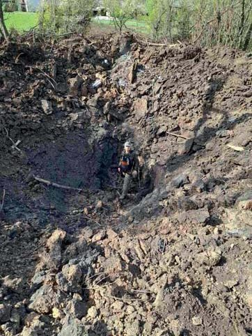
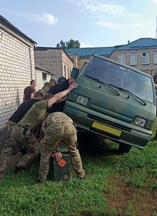
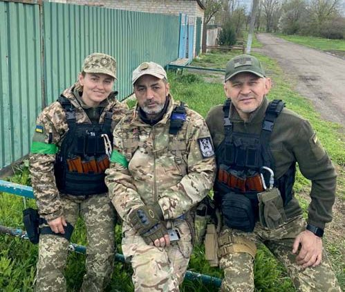
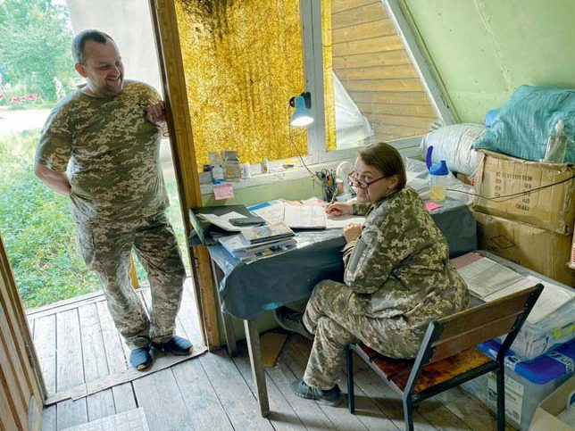
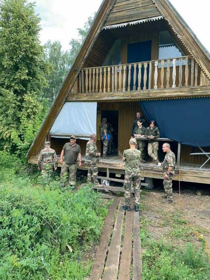
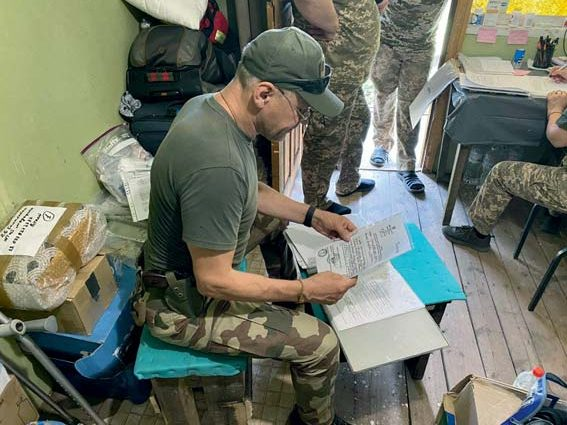
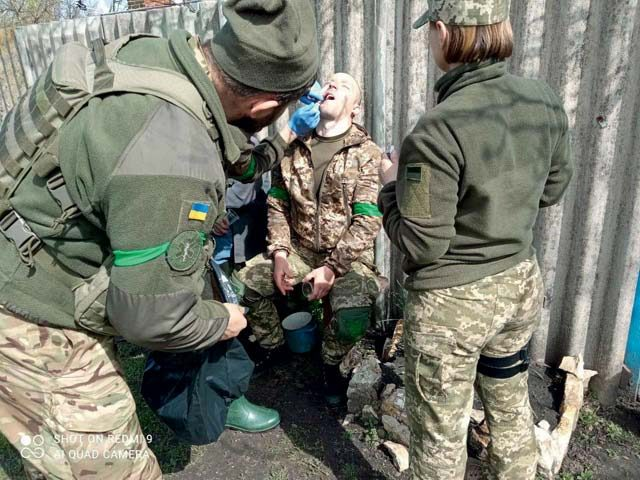
Такий вигляд має автосервіс на війні. Ремонт машини спільними зусиллями та підручними засобами. Фото перед виїздом на бойові позиції 4-ої роти під час відпрацювання взаємодії з організації невідкладної допомоги з 95-ою десантно-штурмовою бригадою. Начмед Валентина Брояк ліворуч, військовослужбовець 4-ї роти Вадим Кадиров у центрі та лікар батальйону Сергій Остафійчук. Село Хрестище, 22 квітня 2022 року. Лікарський прийом хворих і поранених бійців, ведення медичної та звітної документації, видалення зуба при гострому гнійному періоститі, повернення після виїзду, який закінчився успішно…
Найбільша радість – бачити своїх побратимів живими…
— Які моменти свого бойового шляху Ви назвали б найрадіснішими?
— Радісні моменти на війні бувають дуже рідко, але найрадіснішим моментом під час війни я б назвав одну подію, що сталася на Харківщині. Коли хлопці робили зачистку населених пунктів, три наші воїни з мінометної батареї на чолі з командиром батареї Тарасом Спеціальним прийняли бій, на них поперли 12 орків, озброєних до зубів. Звичайно, бій був нерівний, і доки підмога підійшла, Тарас був дуже тяжко поранений і Влад Віт, молодий хлопець, поранений у голову й ногу. Тарас отримав 8 куль. Плече евакуації становило 30–40 кілометрів, він дуже багато крові втратив. У Шебелинці був військово-польовий шпиталь у вигляді контейнерів, вагончиків, де можна було надати хірургічну допомогу і зробити операцію. Операція тривала з 10 вечора до 6 ранку, чотири рази переливали кров, і ми вже думали, що Тарас помре. І для мене найбільшою радістю було те, що через 20 днів він отямився, вижив і зараз живий, хоча й залишиться назавжди інвалідом.
Звичайно, коли ти бачиш своїх побратимів живими і коли йдуть бої і дуже мало поранених і вбитих – це найбільша радість для нас, медиків.
А ще радість відчуваєш, коли у визволених від лютого ворога містах і селах спілкуєшся з людьми, які чекали з нетерпінням ЗСУ, тримали у найглибших схованках українські прапори і зустрічали нас з обіймами.
Згадується, коли ми заходили в село Хрестище Донецької області, то знайшлася жінка, яка нас поселила до себе додому, Людмила Василівна. Потім її хату розбило, вона горіла, вбило собаку… Ми вдячні господарям, котрі не боялись, допомагали нам. Дотепер підтримуємо стосунки.
Так само в селі Острівщина Харківської області учителька української мови Ірина Михайлівна нас прихистила. У неї чоловік Володимир Іванович – інвалід, пересувався в інвалідному візку, але вона запросила цілий взвод ночувати, нагодувала всім, що у неї було.
У селі Весела Гора на Донеччині нас також прихистила жінка, Інна Олексіївна, взяла до себе медиків. І ми дуже здружилися, жили в неї. Два її сини воюють зараз у Житомирській десантно-штурмовій бригаді. То вона каже: «Я допомагаю вам, а хтось допоможе моїм синам». Ось таке єднання українців дуже радує!
А коли перебували в селі Майдан Донецької області, то нас, медиків, забрав до себе Сергій, ми в його хаті і ночували, і склад зробили, і надавали допомогу. Видаляли зуби на лавці і місцевим, і нашим хлопцям, надавали невідкладну стоматологічну допомогу.
Усіх цих добрих людей, патріотів України, пам’ятаю, і у мене мрія після війни просто поїхати, всіх їх відвідати, погостювати… Привезти їм якісь подарунки, віддячити за те, що вони проявили таку чуйність. Це справді приємно, і я пишаюся тим, що Я Українець, що у нас такі Люди і така Країна, і все у нас буде добре!
Ще згадав один момент на службі, який мене приємно здивував і подарував багато позитивних емоцій. Це коли ми зайшли в село Волоська Балаклія, теж Харківської області, якраз у ті моменти наступу нашого. Їхали уздовж села, мимо хат, і на одному обійсті відчиняється брама і чоловік низько кланяється, жестом запрошує нас заїхати. Ми під’їхали, розговорилися, це був Саша, віком десь 55–60 років, вийшла його дружина Інна, і вони зі сльозами на очах говорять, що уперше після окупації побачили українських воїнів: «Де ви так довго були?» Ми обнімалися, цілувалися, вони полізли на стрих, витягнули захований там прапор України, ми з ним сфотографувалися. І настільки вони були вдячні визволителям, що самі лягли на підлогу, а нам постелили на ліжках. Не було тоді світла, зв’язку, але ми тоді так душевно спілкувалися, вечеряли, розмовляли… Приходили інші люди, сусід приніс кроля, сусідка – індика. Це спілкування було настільки щирим, не фальшивим, справжнім, що запам’ятається назавжди.
Через тиждень Олександр пішов у військкомат, записався добровольцем і зараз також служить в одному з підрозділів Збройних Сил України, незважаючи на вік, тому що він, здається, 1965 року народження.
Також на Харківщині ми їхали дорогою і побачили плакат, на якому було написано «Слава ЗСУ! Хлопці, заберіть їжу!» Коли ми прийшли, ніхто не питав, хто ви, звідки, просто питали, скільки бійців, і видавали їжу безкоштовно. Місцеві мешканці організували такий пункт харчування для військовиків. Це також позитивний такий момент. Дуже приємні моменти, коли є мобільний зв’язок, світло, газ, тепла вода, людська їжа і вода, ліжко та тепло…
Звичайним моментом радості є те, коли тобі дзвонять твої рідні, твої друзі. Це прямо до сліз зворушує душу. Тому що ця війна, яку параша веде проти України і всього прогресивного людства, – це найжорстокіше, найнесправедливіше, що є на світі: у ХХІ столітті вбивати людей, чинити геноцид проти українського народу, перетворювати на суцільні руїни міста і села, завдавати непоправної шкоди природі – дикунство, яке людською логікою не поясниш, це логіка диявола.
А для захисників України ця війна – такий важкий труд! Важкий труд на грані життя і смерті… І такі моменти, коли ти чуєш своїх рідних, близьких – це теж надзвичайно важливо і радісно.
Ми всі переживали моменти щастя, коли ЗСУ звільняли окуповані території Харківської, Херсонської, Луганської, Запорізької та Донецької областей.
Стоматологія на фронті – складна справа…
— Чи доводилося Вам і на фронті надавати стоматологічну допомогу бойовим побратимам?
— Надання стоматологічної допомоги в тих умовах, в яких ми опинилися, було складною справою. Ніхто там карієсом, навіть пульпітом не займався. Якщо ми в чомусь допомагали людям, то це видалення зубів на табуретці чи на лавці в якійсь розбитій хаті. І це в кращому випадку – якщо спокійно. У мене було два десятки елеваторів різних видів, вони були простерилізовані, допомагали в цьому мої друзі Мирон Угрин, Олег Мацех зі Львова, мої друзі з Польщі Анджей та Павел Оліксєвічі, мій друг з Норвегії Криштоф Грегор, лікарі з Хмельницького Микола Ніколайчук, Людмила Гарват та Микола Андрушко, волонтер Іван Терещенко, лікар з Полтави Олександр Кириленко (нині захищає країну у лавах ЗСУ), лікарі з Харкова Шакер Таравнех і Олег Стражко. Олег міг простерилізувати інструменти і привозив до нас стерильні голки, скальпелі, кюретажні ложки, тампони, серветки, стериліум, рукавиці, пінцети… У найважчих умовах ми могли робити анестезію, розтини (при гнійних процесах), накладати шви, видаляти зуби. Ну от і вся стоматологічна допомога в тому вигляді, в якому ми могли її надати.
Що ще слід відзначити – санацію бійців 86-го батальйону, яку проводили харківські лікарі. Ми привозили в Харків автобусом по 20–30 бійців, усього близько 100 військовослужбовців одночасно, і у восьмій стоматологічній поліклініці, де директор Олександр Валеріанович Дікало, їх лікували. У нас навіть фільм є про це, колеги лікували їх безкоштовно і без черги.
А в Херсоні є лікар Андрій Ватанов, який надавав невідкладну стоматологічну допомогу. Низький уклін і подяка від бійців 86-го батальйону та особисто від мене цим прекрасним людям!
— Коли йшлося про роботу військових стоматологів, попередній гість нашої Вітальні Ігор Ященко наголошував на важливості надання стоматологічної допомоги нашим воїнам на етапі до їхнього прибуття на фронт, у період підготовки, навчання. Що говорить Ваш досвід стоматолога і воїна?
— Щодо надання стоматологічної допомоги воїнам і санації, то стан речей, на жаль, такий, що я не бачив жодного бійця, якому не потрібно було б надавати стоматологічну допомогу і він був би здоровий. Це були тільки я, Дмитро і ще декілька медиків, які слідкували за зубами, а у бійців були часткова і повна адентія, і карієс, і пульпіт, і пародонтит, рак язика, і що хочеш, повні букети. Тому, звичайно, коли з’явиться можливість у місцях постійної дислокації підрозділів або під час навчань проводити санацію ротової порожнини, хоча би позабирати інфекції і вирішити питання, щоб не було ускладнень надалі, то це було б дуже добре. І наскільки я знаю, така робота ведеться, робляться такі пересувні вагончики, вони під’їжджають, волонтери-лікарі лікують, і напевно, це найкращий спосіб надання цієї допомоги. Це треба продовжувати робити, і це дуже добре. А на лінії фронту стоматологія має такий вигляд, як я казав, там не до того.
— Ми часто бачимо в теленовинах і соцмережах кадри, де наші воїни рятують не лише людей, а й тваринок, домашніх і навіть диких (разючий контраст з тим, що чинять братам нашим меншим путлерівські катюги…). Чи випадало Вам рятувати пухнастиків?
— Під час обстрілів і бойових дій бачив дуже багато бродячих собак, котів, які шукали притулок, контужені корови ходили… Був випадок, коли Володя з мінометної батареї, він був бойовий медик там, підібрав поранену собачку, назвав її Міна, у неї була перебита спина, осколкові поранення, контузія… І він її виходив – антибіотики колов, мазі накладав… Коли вона одужала, то від свого рятівника не відходила ні на крок, де б він не був, вона його не покидала, чи він іде в штаб, чи в їдальню, чи в туалет, вона весь час прошкує за ним. Тільки йому варто було лягти спати, як вона вкладалася в ногах і його берегла. Отака була вдячність і любов тварини, серед людей не завжди таке побачиш…
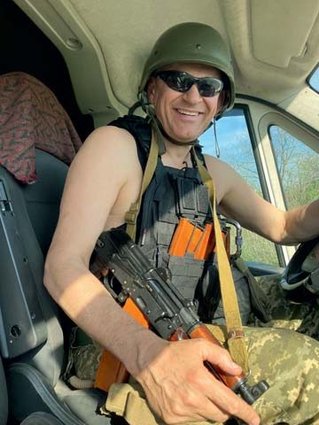
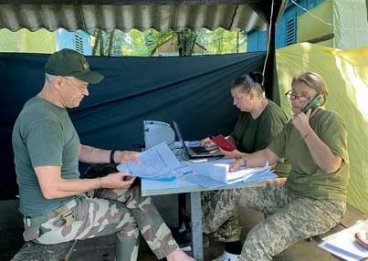
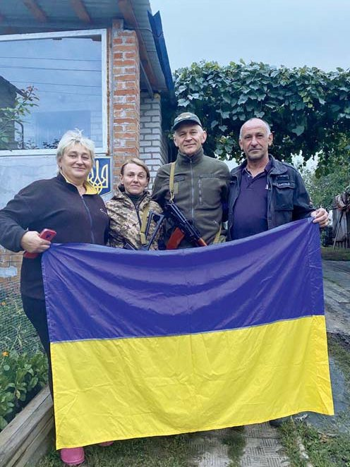
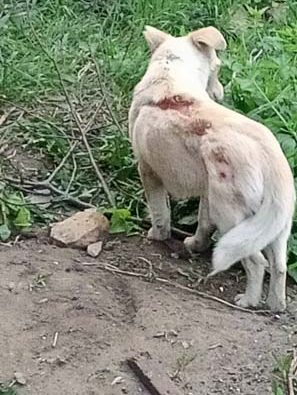
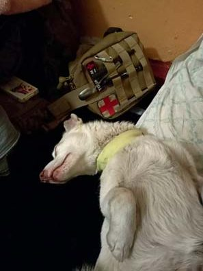
Село Волоська Балаклія на Харківщині. Після визволення від окупантів місцеві мешканці Інна та Олександр вийняли прапор України зі схованки. Зліва направо – Інна, капітани медичної служби Валентина Брояк і Сергій Остафійчук, господар обійстя Олександр. Невідкладну допомогу довелося надавати і собачці Міні, пораненій під час мінометного обстрілу з боку рашистів…
Після будь-якої ночі, навіть полярної, завжди настає день…
— Багатьом воїнам, що пройшли крізь пекло боїв із рашистськими нелюдами і після поранень чи демобілізації сьогодні в тилу, допомагає віднайти душевну рівновагу повернення до хобі мирного часу. Що допомагає Вам віднаходити сили для самовідданої праці в клініці і турботи про ближніх?
— Про реабілітацію, адаптацію в мирному житті можу сказати, що мені дає позитивні емоції робота. Те, що ти потрібен людям, вони тебе чекали, нікуди не пішли, дочекалися, коли ти прийшов з фронту і далі їх лікуєш, – це робить свою справу, і саме це надає мені сил і для лікарської практики, і для допомоги фронту та рідним.
Користуючись нагодою, хочу подякувати колективу клініки. Найважливіше в клініці – це не приміщення, не обладнання, а люди, які повсякденно, терпляче, крок за кроком, якісно виконують свою роботу. Не всі гідно витримали випробування, які принесла війна, але основний кістяк колективу проявив себе гідно і самовіддано, працював, щоб фірма вистояла у важкі часи. Я дякую адміністраторам Наталії Ізотовій, Ірині Коломієць, лікарям Олені Остафійчук та Жанні Бороздіній, асистентам Анжелі Ситниковій, Людмилі Довгань, Інні Олійник. Дякую зубному техніку Юрію Довжанському. Велика подяка бухгалтеру Станіславу Мушинському. Це ядро, яке дозволило встояти клініці на період нашого із сином перебування на фронті. Для мене велике щастя бути зараз поруч з ними і продовжувати працю. Тепер це моя нова родина!
Але якогось душевного спокою все одно немає, тому що війна не закінчилась, і ти як уже пішов туди, прийшов, вона лишається з тобою. І напевно, коли буде наша Перемога, тоді це буде свято величне і безмежне, а зараз, наприклад, можуть дратувати трохи і музика, і сміх… Тому що навіть коли я в тилу, все одно розумію, що зараз, у цю мить, хтось отримав поранення, когось везуть, хтось стогне, хтось втратив побратима, батька, сина, доньку…
І люди, які тут, у тилу, не зазнають усіх жахіть цієї війни, зобов’язані проявляти співучасть, співпереживання, вони ніколи не повинні забувати, що йде війна і хтось у цей час воює, поранений, обмежений у своїх звичайних таких радостях і в елементарному щасті, він не має звичайних речей, що їх мають люди, які живуть тут. Тому я всіх прошу не забувати про наших воїнів, про їхні родини, надавати по можливості допомогу, якщо у них є в чомусь потреба і вони просять. Інакше ми цю війну не виграємо. Ми повинні єдиним фронтом – ті, хто там, і ті, хто тут, – захищати нашу країну. Бо якщо ми цього не зробимо, то ворог прийде в кожну хату, і він не буде дивитися, у кого яка там медкомісія, хто придатний чи не придатний, просто тих, хто патріоти і воювали, розстріляють, а тих, хто проявить колаборантство, як вони кажуть, сотруднічєство, просто поженуть далі на Польщу, Чехію, Угорщину, країни Балтії… Ззаду ітимуть оті заградітєльниє отряди, які будуть розстрілювати дезертирів…
Тож вибір такий собі невеликий: або ти воюєш за свою країну, захищаєш її, або ти будеш воювати в складі рашистської армії і станеш військовим злочинцем, катом для свого й інших народів.
— Чи буваєте на рідній Івано-Франківщині?
— Так, буваю, у мене в селі Хімчин Косівського району живуть батьки, татові зараз 88 років, мамі 82. Вони обоє лежачі. Коли я був на фронті, то мені вдалося якось від них це приховати, і вони не знали, що я на війні. Я не приїжджав, то кивав на ковід, то казав, що хворий, посилав когось іншого – доньку, брата, і так якось мені вдалося це приховувати, але коли приїхав і розказав правду, то мама плакала і дуже переживала. Їм потрібна постійна допомога, я звільнений у запас 20 квітня цього року по догляду за батьками у зв’язку з погіршенням їхнього стану здоров’я.
Тому я їх або привожу до себе в Хмельницький і тут лікую, доглядаю, або вони просяться на батьківщину, то везу туди, якщо їхній стан здоров’я дозволяє. Трохи там, трохи тут – отак і живемо. Тобто зараз такий час важкий, важкий у плані і здоров’я батьків, і війни, і стоматології, і економіки. Але після будь-якої ночі, навіть полярної, завжди настає день, тому живемо надією на краще, віримо, що все буде добре!
— Цими днями палії Третьої світової війни знову завдали масованих ударів по мирних українських містах і селах, по об’єктах енергетичної інфраструктури. Зрозуміло, що попереду тяжкий зимовий період з блекаутами. Де черпати сили українцям, щоб вистояти і перемогти?
— Щодо обстрілів по інфраструктурі, селах, містах.... Що я бачив і що зрозумів, чим можу поділитися? Ми маємо справу з досить сильним ворогом, жорстоким, підступним, який готувався до цієї війни десятиліттями, який знав, що робити: в наші органи влади, політичні партії підкидалася агентура, яка вивчала, збирала дані і подавала їх нагору ворогові, а вони вже планували, що з нами робити і як нас тут прибрати до рук.
Але, слава Богу, сталося неймовірне, надзвичайне! Народ швидше, ніж політики, зорієнтувався і дав бій. Дехто, може, і хотів Україну злити і здати. Але військові, як і патріоти, добровольці, котрі переживали за країну, і люди доброї волі, а їх, слава Богу, у нас дуже багато, не дозволили цього зробити, дали бій… Так, ворог непростий, він і далі нас обстрілюватиме, далі бомбардуватиме міста і села, далі підкладатиме агентуру в різні політичні кошики. Але треба пам’ятати одне: український народ любить свою землю, готовий за неї боротися, буде її завжди захищати.
Я бачив молодих хлопців, які вмирали, і останніми їхніми словами було «Слава Україні!»
Ми повинні передусім дбати про обороноздатність країни, налагодити виробництво найсучаснішої зброї, бо навіть якщо ми ворога виженемо за межі кордонів 1991 року, то він не відстане від нас просто так. Він знову шукатиме приводів та шляхів, як завоювати українську землю. Думаю, що на нас чекає швейцарський принцип, це був би найправильніший варіант, тобто у кожного чоловіка має бути сейф зі зброєю вдома, принаймні снайперська гвинтівка, кулемет, гранатомет, форма, аптечка, наколінники, бронежилет. Ми маємо ходити щороку на збори, на стрільби і бути готовими захищати рідну землю. Якби це було так, повірте мені, ніякий путлер і ніхто сюди навіть не поткнувся б. Якби його зустріли з кожного вікна вогнем, то на тому охота відпала б одразу.
Я вірю в майбутнє України, я вірю в нашу Перемогу, я вірю в те, що ми здолаємо ворога, зробимо 4–5-метровий паркан на кордоні і будемо охороняти Україну і всю Європу від рашистів-запарканників.
Для хлопців наших буде робота, для медиків буде санація, і для всіх нас настане нарешті спокій.
І гордо нести свій професійний прапор на міжнародному рівні!
— Коли нашою Перемогою закінчиться ця тяжка війна з московитськими маніяками, багато молодих стоматологів започатковуватимуть свою справу, як це зробили Ви три десятиліття тому. Які поради Ви дали б колегам, котрі відкриватимуть свої приватні клініки?
— Так, молоді стоматологи відкриватимуть свої клініки, створюватимуть робочі місця. Що б я їм порадив? По-перше, пораджу мати багато терпіння і творчий підхід до всіх справ. Пам’ятати про людей, які працюють поруч. Якщо і доведеться з кимось конкурувати, то конкурувати добросовісно. Бажаю молодим колегам бути успішними, конкурентоспроможними, бути професіоналами, пам’ятати, що вони українці, і гордо нести свій професійний прапор на міжнародному рівні!
— Дякую за розмову! І бажаю всім українським стоматологам незламності тіла і духу, щоб працювати на Перемогу України над рашистськими агресорами, Здоров’я і Краси – над недугами, Добра – над злом…